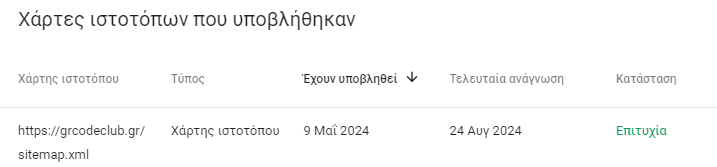
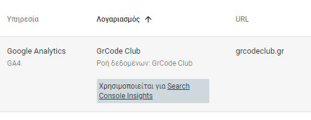

Google Tools
Παρακάτω παρουσιάζουμε τις υπηρεσίες της Google που χρησιμοποιούμε.
1) Google Search Console
Η σελίδα έχει καταλογοποιηθεί, μέσα από το Αίτημα Δημιουργίας Ευρετηρίου

Χάρτης Ιστοτόπου (XML Sitemap)
Στην Google Search Console, ο χάρτης ιστοτόπου (sitemap) χρησιμοποιείται για να βοηθήσει την Google να εντοπίσει και να ευρετηριάσει τις σελίδες του ιστότοπού σας πιο αποτελεσματικά.
Δες εδώ το Sitemap του grcodeclub.gr

Συσχετισμένες υπηρεσίες
Google Search Console: Συνδέεται με το Google Analytics για την παρακολούθηση της οργανικής αναζήτησης.
